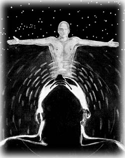
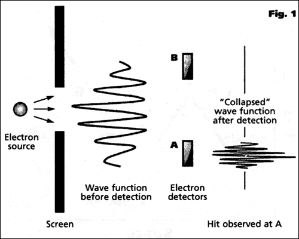
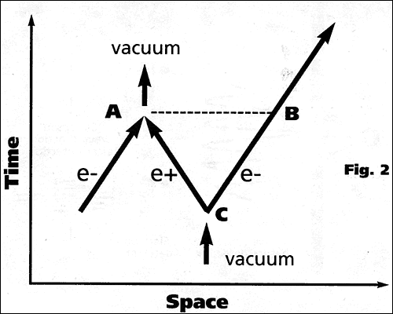

|
Quantum physics is claimed to support the mystical notion that
the mind creates reality. However, an objective reality, with no
special role for consciousness, human or cosmic, is consistent with
all observations.
Victor J. Stenger

Certain interpretations of quantum mechanics, the revolutionary
theory developed early in the century to account for the anomalous
behavior of light and atoms, are being misconstrued so as to imply
that only thoughts are real and that the physical universe is the
product of a cosmic mind to which the human mind is linked
throughout space and time. This interpretation has provided an
ostensibly scientific basis for various mind-over-matter claims,
from ESP to alternative medicine. "Quantum mysticism" also forms
part of the intellectual backdrop for the postmodern assertion that
science has no claim on objective reality.
The word "quantum" appears frequently in New Age and modern
mystical literature. For example, physician Deepak Chopra (1989) has
successfully promoted a notion he calls quantum healing, which
suggests we can cure all our ills by the application of sufficient
mental power.
According to Chopra, this profound conclusion can be drawn from
quantum physics, which he says has demonstrated that "the physical
world, including our bodies, is a response of the observer. We
create our bodies as we create the experience of our world" (Chopra
1993, 5). Chopra also asserts that "beliefs, thoughts, and emotions
create the chemical reactions that uphold life in every cell," and
"the world you live in, including the experience of your body, is
completely dictated by how you learn to perceive it" (Chopra 1993,
6). Thus illness and aging are an illusion and we can achieve what
Chopra calls "ageless body, timeless mind" by the sheer force of
consciousness.1
Amit Goswami, in The Self-Aware Universe: How Consciousness
Creates the Material World, argues that the existence of paranormal
phenomena is supported by quantum mechanics:
. . . psychic phenomena, such as distant viewing and
out-of-body experiences, are examples of the nonlocal operation
of consciousness . . . . Quantum mechanics undergirds such a
theory by providing crucial support for the case of nonlocality
of consciousness. (Goswami 1993, 136)
Since no convincing, reproducible evidence for psychic phenomena has
been found, despite 150 years of effort, this is a flimsy basis
indeed for quantum consciousness.2
Although mysticism is said to exist in the writings of many of
the early century's prominent physicists (Wilber 1984), the current
fad of mystical physics began in earnest with the publication in
1975 of Fritjof Capra's The Tao of Physics (Capra 1975). There Capra
asserted that quantum theory has confirmed the traditional teaching
of Eastern mystics: that human consciousness and the universe form
an interconnected, irreducible whole. An example:
To the enlightened man . . . whose consciousness
embraces the universe, to him the universe becomes his
"body," while the physical body becomes a manifestation
of the Universal Mind, his inner vision an expression of
the highest reality, and his speech an expression of
eternal truth and mantric power
|
Lama Anagarika
Govinda Foundations of Tibetan Mysticism3
(Capra 1975, 305)
|
Capra's book was an inspiration for the New Age, and "quantum"
became a buzzword used to buttress the trendy, pseudoscientific
spirituality that characterizes this movement.4
Wave-Particle Duality
Quantum mechanics is thought, even by many physicists, to be
suffused with mysteries and paradoxes. Mystics seize upon these to
support their views. The source of most of these claims can be
traced to the so-called wave-particle duality of quantum physics:
Physical objects, at the quantum level, seem to possess both local,
reductionist particle and nonlocal, holistic wave properties that
become manifest depending on whether the position or wavelength of
the object is measured.
The two types of properties, wave and particle, are said to be
incompatible. Measurement of one quantity will in general affect the
value the other quantity will have in a future measurement.
Furthermore, the value to be obtained in the future measurement is
undetermined; that is, it is unpredictable-although the statistical
distribution of an ensemble of similar measurements remains
predictable. In this way, quantum mechanics obtains its
indeterministic quality, usually expressed in terms of the
Heisenberg uncertainty principle. In general, the mathematical
formalism of quantum mechanics can only predict statistical
distributions.5
Despite wave-particle duality, the particle picture is maintained
in most quantum mechanical applications. Atoms, nuclei, electrons,
and quarks are all regarded as particles at some level. At the same
time, classical "waves" such as those of light and sound are
replaced by localized photons and phonons, respectively, when
quantum effects must be considered.
In conventional quantum mechanics, the wave properties of
particles are formally represented by a mathematical quantity called
the wave function, used to compute the probability that the particle
will be found at a particular position. When a measurement is made,
and its position is then known with greater accuracy, the wave
function is said to "collapse," as illustrated in Figure 1.
|

|
| Figure 1. Wave function collapse in
conventional quantum mechanics. An electron is localized by
passing through an aperture. The probability that it will
then be found at the particular position is determined by
the wave function illustrated to the right of the aperture.
When the electron is then detected at A, the wave function
instantaneously collapses so that it is zero at B. |
Einstein never liked the notion of wave function
collapse, calling it a "spooky action at a distance." In Figure 1, a
signal would appear to propagate with infinite speed from A to B to
tell the wave function to collapse to zero at B once the particle
has been detected at A. Indeed, this signal must propagate at
infinite speed throughout the universe since, prior to detection,
the electron could in principle have been detected anywhere.
This surely violates Einstein's assertion that no signals can
move faster than the speed of light.
Although they are usually not so explicit, quantum mystics seem
to interpret the wave function as some kind of vibration of a
holistic ether that pervades the universe, as "real" as the
vibration in air we call a sound wave. Wave function collapse, in
their view, happens instantaneously throughout the universe by a
willful act of cosmic consciousness.
In their book The Conscious Universe, Menas Kafatos and Robert
Nadeau identify the wave function with "Being-In-Itself":
One could then conclude that Being, in its physical analogue
at least, had been "revealed" in the wave function. . . . [A]ny
sense we have of profound unity with the cosmos . . . could be
presumed to correlate with the action of the deterministic wave
function . . . . (Kafatos and Nadeau 1990, 124)
Thus they follow Capra in imagining that quantum mechanics unites
mind with the universe. But our inner sense of "profound unity with
the cosmos" is hardly scientific evidence.
The conventional interpretation of quantum mechanics, promulgated
by Bohr and still held by most physicists, says nothing about
consciousness. It concerns only what can be measured and what
predictions can be made about the statistical distributions of
ensembles of future measurements. As noted, the wave function is
simply a mathematical object used to calculate probabilities.
Mathematical constructs can be as magical as any other figment of
the human imagination-like the Starship Enterprise or a Roadrunner
cartoon. Nowhere does quantum mechanics imply that real matter or
signals travel faster than light. In fact, superluminal signal
propagation has been proven to be impossible in any theory
consistent with conventional relativity and quantum mechanics
(Eberhard and Ross 1989).
Romantic Interpretations
Not everyone has been happy with the conventional interpretation of
quantum mechanics, which offers no real explanation for wave
function collapse. The desire for consensus on an ontological
interpretation of quantum mechanics has led to hundreds of proposals
over the years, none gaining even a simple majority of support among
physicists or philosophers.
Spurred on by Einstein's insistence that quantum mechanics is an
incomplete theory, that "God does not play dice," subquantum
theories involving "hidden variables" have been sought that provide
for forces that lie below current levels of observation (Bohm and
Hiley 1993). While such theories are possible, no evidence has yet
been found for subquantum forces. Furthermore, experiments have made
it almost certain that any such theory, if deterministic, must
involve superluminal connections.6
Nevertheless, quantum mystics have greeted the possibility of
nonlocal, holistic, hidden variables with the same enthusiasm they
show for the conscious wave function. Likewise, they have embraced a
third view: the many worlds interpretation of Hugh Everett (Everett
1957).
Everett usefully showed how it was formally possible to eliminate
wave function collapse in a quantum theory of measurement. Everett
proposed that all possible paths continue to exist in parallel
universes which split off every time a measurement is made. This has
left the door open for the quantum mystics to claim that the human
mind acts as sort of a "channel selector" for the path that is
followed in an individual universe while existing itself in all
universes (Squires 1990). Needless to say, the idea of parallel
universes has attracted its own circle of enthusiastic proponents,
in all universes presumably.
Effective Nonlocality
Admittedly, the quantum world is different from the world of
everyday experience that obeys the rules of classical Newtonian
mechanics. Something beyond normal common sense and classical
physics is necessary to describe the fundamental processes inside
atoms and nuclei. In particular, an explanation must be given for
the apparent nonlocality, the instantaneous "quantum leap," that
typifies the non-commonsensical nature of quantum phenomena.
Despite the oft-heard statement that quantum particles do not
follow well-defined paths in space-time, elementary-particle
physicists have been utilizing just such a picture for fifty years.
How is this reconciled with the quantum leap that seems to
characterize atomic transitions and similar phenomena? We can see
how, in the space-time diagram shown in Figure 2.
|

|
| Figure 2. Effective nonlocality. How an
apparent instantaneous "quantum leap" can be made between
two points in space. An electron-positron pair is created at
C by a quantum fluctuation of the vacuum. The positron
annihilates an electron at A, undoing the original vacuum
fluctuation so that there is zero net-energy change. The
electron thus appears to make an instantaneous quantum leap
from A to B. The distance AB is comparable to the wavelength
associated with the particle, so "holistic" wave behavior
results. |
On the left, an electron (e-) is moving along a
well-defined path. An electron-positron pair (e-e+) is produced at
point C by a quantum fluctuation of the vacuum, allowed by the
uncertainty principle. The positron annihilates the original
electron at point A while the electron from the pair continues past
point B. Since all electrons are indistinguishable, it appears as if
the original electron has jumped instantaneously from A to B.
In Figure 2, all the particles involved follow definite paths.
None moves faster than the speed of light. Yet what is observed is
operationally equivalent to an electron undergoing superluminal
motion, disappearing at A and appearing simultaneously at a distant
point B. No experiment can be performed in which the electron on the
left can be distinguished from the one on the right. A simple
calculation shows that the distance AB is of the order of the (de
Broglie) wavelength of the particle. In this manner, the "holistic"
wave nature of particles can be understood in a manner that requires
no superluminal motion and certainly no intervention of human
consciousness.
Furthermore, since the quantum jump is random, no signal or other
causal effect is superluminally transmitted. On the other hand, a
deterministic theory based on subquantum forces or hidden variables
is necessarily superluminal.
Thus quantum mechanics, as conventionally practiced, describes
quantum leaps without too drastic a quantum leap beyond common
sense. Certainly no mystical assertions are justified by any
observations concerning quantum processes.
Conclusion
Quantum mechanics, the centerpiece of modern physics, is
misinterpreted as implying that the human mind controls reality and
that the universe is one connected whole that cannot be understood
by the usual reduction to parts.
However, no compelling argument or evidence requires that quantum
mechanics plays a central role in human consciousness or provides
instantaneous, holistic connections across the universe. Modern
physics, including quantum mechanics, remains completely
materialistic and reductionistic while being consistent with all
scientific observations.
The apparent holistic, nonlocal behavior of quantum phenomena, as
exemplified by a particle's appearing to be in two places at once,
can be understood without discarding the commonsense notion of
particles following definite paths in space and time or requiring
that signals travel faster than the speed of light.
No superluminal motion or signalling has ever been observed, in
agreement with the limit set by the theory of relativity.
Furthermore, interpretations of quantum effects need not so uproot
classical physics, or common sense, as to render them inoperable on
all scales-especially the macroscopic scale on which humans
function. Newtonian physics, which successfully describes virtually
all macroscopic phenomena, follows smoothly as the many-particle
limit of quantum mechanics. And common sense continues to apply on
the human scale.
Notes
- For a review of alternate medicine,
including "quantum medicine," see Douglas Stalker and Clark
Glymour, eds., Examining Holistic Medicine (Amherst, N.Y.:
Prometheus Books, 1985).
- For a fuller discussion and references, see
Victor J. Stenger, Physics and Psychics: The Search for a World
Beyond the Senses (Amherst, N.Y.: Prometheus Books, 1990).
- L. A. Govinda, Foundations of Tibetan
Mysticism (New York: Samuel Weiser, 1974), p. 225, as quoted in
Capra 1975, p. 305.
- See, for example, Marilyn Ferguson, The
Aquarian Conspiracy: Personal and Social Transformation in the
1980s (Los Angeles: Tarcher, 1980).
- Of course, in some cases those distributions
may be highly peaked and thus an outcome can be predicted with
high probability, that is, certainty for all practical purposes.
In fact, this is precisely what happens in the case of systems
of many particles, such as macroscopic objects. These systems
then become describable by deterministic classical mechanics as
the many-particle limit of quantum mechanics.
- For a fuller discussion and references, see
Victor J. Stenger, The Unconscious Quantum: Metaphysics in
Modern Physics and Cosmology (Amherst, N.Y. : Prometheus Books,
1995).
References
- Bohm D., and B. J. Hiley. 1993. The Undivided Universe: An
Ontological Interpretation of Quantum Mechanics. London:
Routledge.
- Capra, Fritjof. 1975. The Tao of Physics. Boulder, Colorado:
Shambhala.
- Chopra, Deepak. 1989. Quantum Healing: Exploring the
Frontiers of Mind/Body Medicine. New York: Bantam.
- ---. 1993. Ageless Body, Timeless Mind: The Quantum
Alternative to Growing Old. New York: Random House.
- Eberhard, Phillippe H., and Ronald R. Ross. 1989. Quantum
field theory cannot provide faster-than-light communication.
Found. Phys. Lett. 2: 127-149.
- Everett III, Hugh. 1957. "Relative state" formulation of
quantum mechanics. Rev. Mod. Phys. 29: 454-462.
- Goswami, Amit. 1993. The Self-Aware Universe: How
Consciousness Creates the Material World. New York: G. P.
Putnam's Sons.
- Kafatos, Menas, and Robert Nadeau. 1990. The Conscious
Universe: Part and Whole in Modern Physical Theory. New York:
Springer-Verlag.
- Squires, Euan. 1990. Conscious Mind in the Physical World.
New York: Adam Hilger.
- Wilber, Ken, ed. 1984. Quantum Questions: Mystical Writings
of the World's Great Physicists. Boulder, Colorado: Shambhala.
|